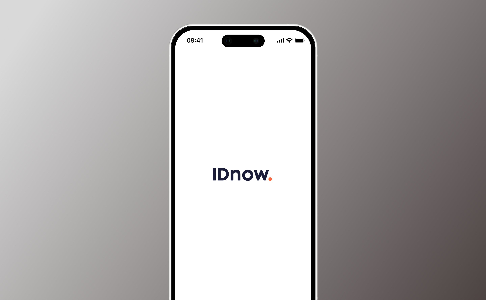

IDnow ID Verification flow
With a complex verification flow, each step must be clear and easy to understand.
The app is mainly used as an SDK so it lives inside a client's app. It is white label so has a list of possible customizations. The client can customize with a web interface.
The team tested the contrast ratio on every page. Main issue is clients can customize colors so we need to show a warning when client sets contrast is outside allowed amount.
The app starts with
- Logo page
- Terms and conditions
- Allow camera page
- Scan front ID
if NFC available in device and ID, then switch to NFC
if not scan back ID
Security tilt ID to show holograms
if user has difficulty, switch to assisted flow with an Agent assisted flow